把瞬间，
留成画。
让一张喜欢的照片，拥有纸张、颜料与手作的温度。保留那些认得出的细节，换一种方式收藏日常。
试试你的照片照片艺术转绘技能 · 12 款材质配方
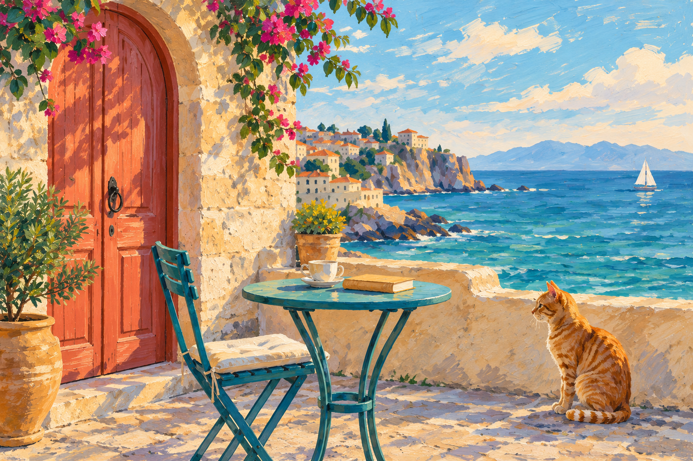
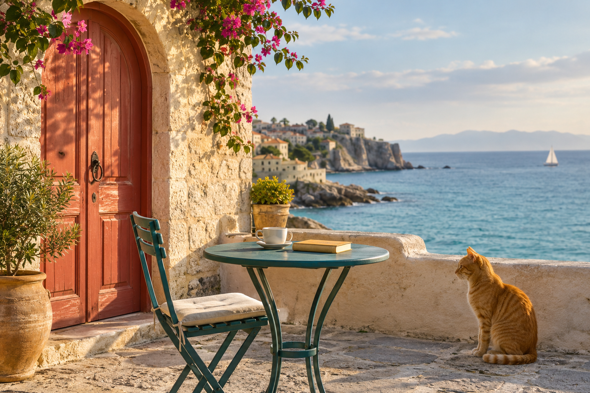
原图 · AI 合成海盐手绘同一个下午，十二种触感。
12 组原图与转绘对照 · 每款均从同一张合成输入图开始
哑光水粉与自然干刷，把海风留在温白纸上。


层叠卡纸、细腻切边与轻柔投影，让画面有了深浅。
转绘后 · 纸雕剧场点击放大 ↗

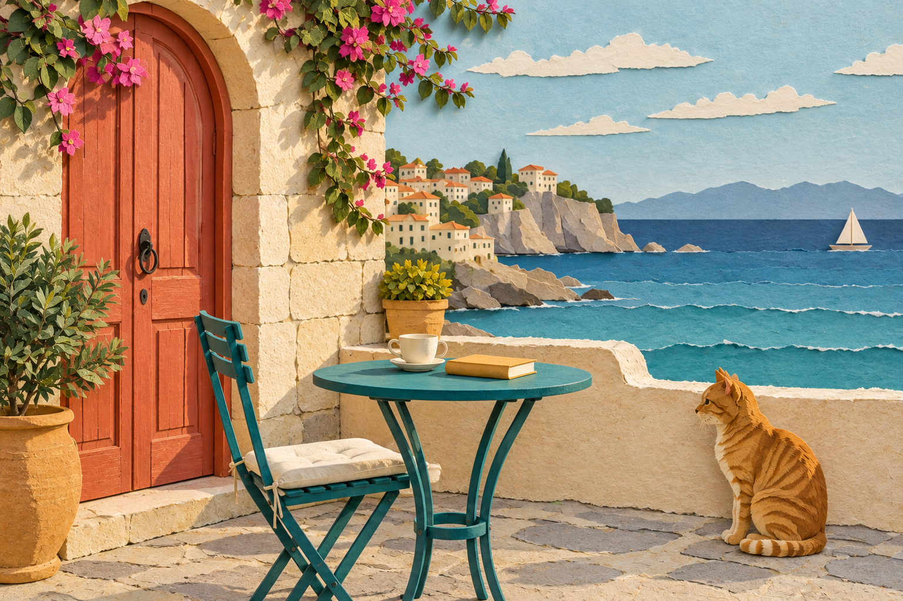
有限色版与颗粒套印，带一点手工印刷的偶然。
转绘后 · 周末孔版点击放大 ↗

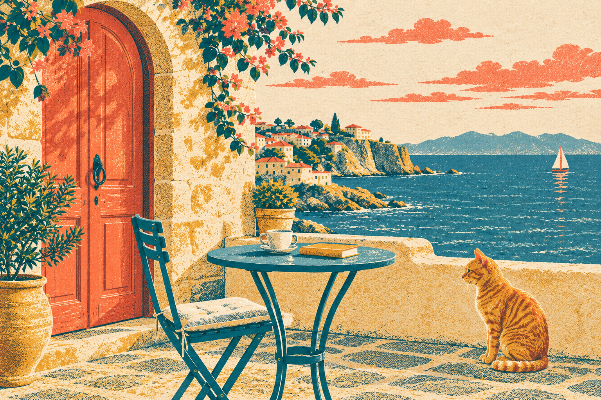
浓淡墨层在宣纸上洇开，干笔与赭彩收住细节。
转绘后 · 墨彩潮汐点击放大 ↗

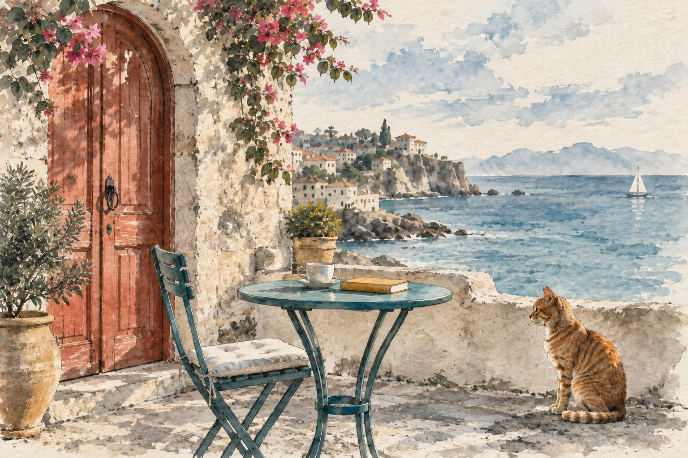
沿着物体形状走针，让棉麻与织线留住光影。
转绘后 · 织光记忆点击放大 ↗

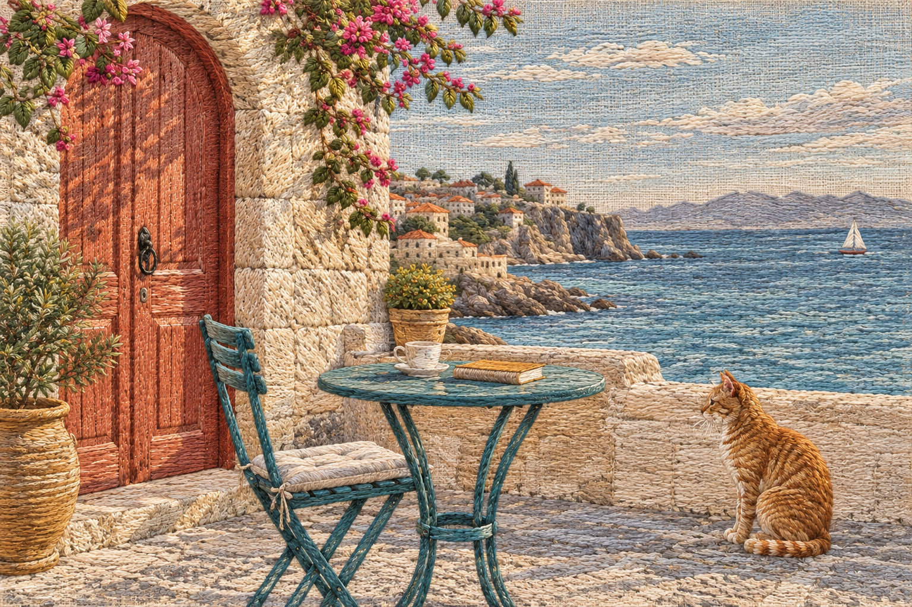
石墨排线与纸张细齿，用黑白层次描出午后。
转绘后 · 铅笔停格点击放大 ↗

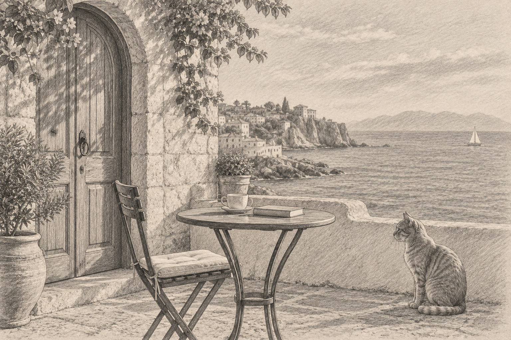
亚麻底纹与短笔触交织，亮部厚涂、暗部透气。
转绘后 · 窗边油彩点击放大 ↗

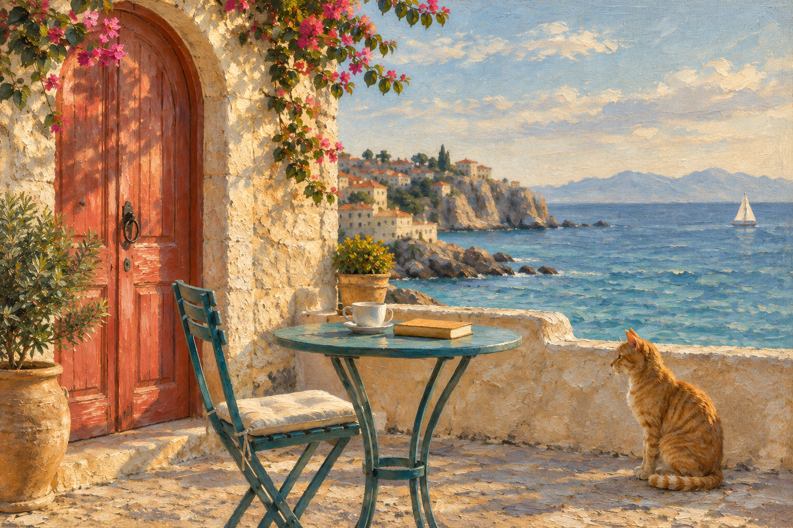
无釉陶土、柔和塑形与细小压痕，收藏手作的温度。
转绘后 · 陶土晴日点击放大 ↗

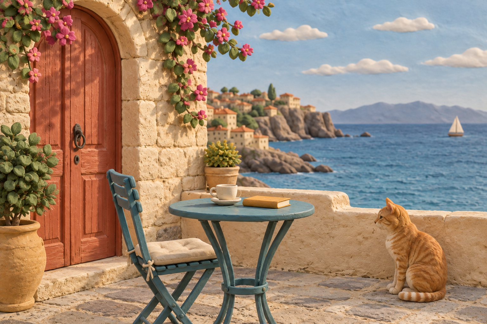
细粒胶片、柔和高光与暖色过渡，留下熟悉的光。
转绘后 · 琥珀胶片点击放大 ↗

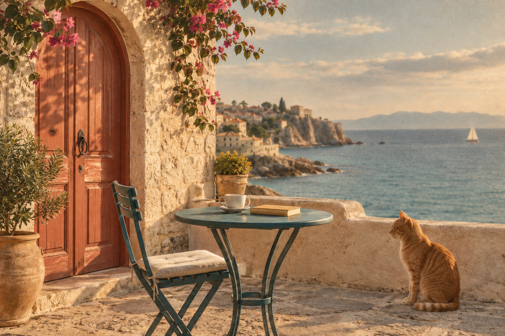
有呼吸感的墨线与少量色块，让留白也参与叙事。
转绘后 · 呼吸线稿点击放大 ↗

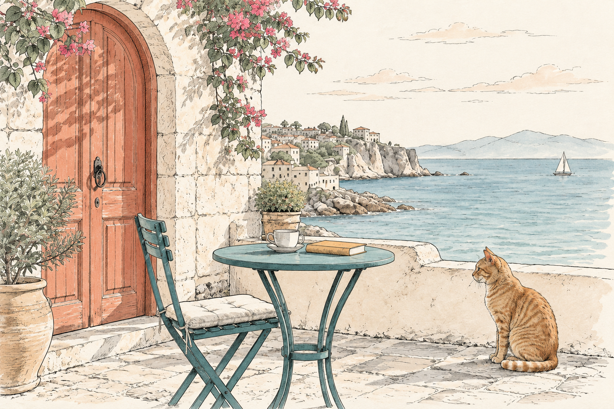
撕边色纸与铅笔补线，拼出清晰而丰富的空间。
转绘后 · 野集拼贴点击放大 ↗

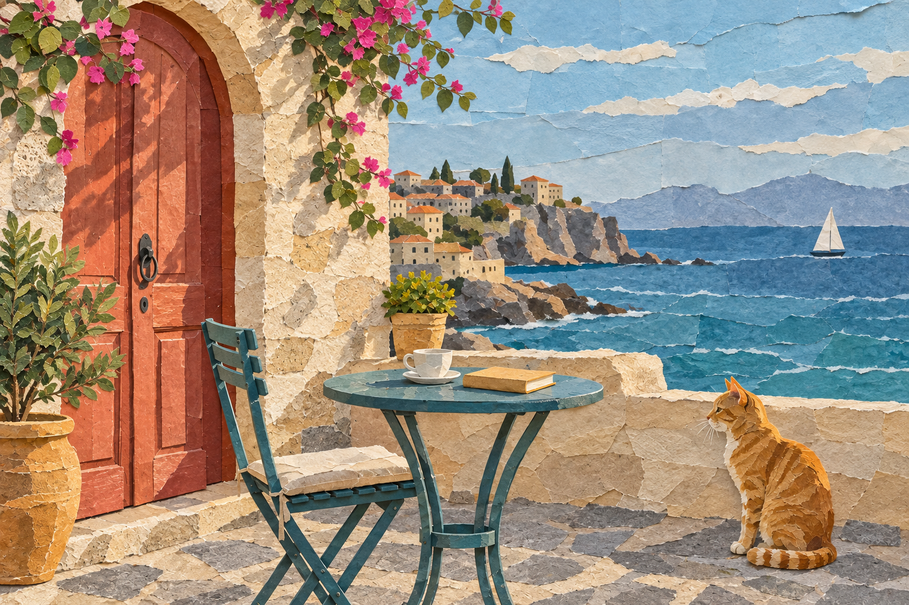
短粉彩笔触与砂面纸齿，暖亮部衬出冷色阴影。
转绘后 · 夜色粉彩点击放大 ↗

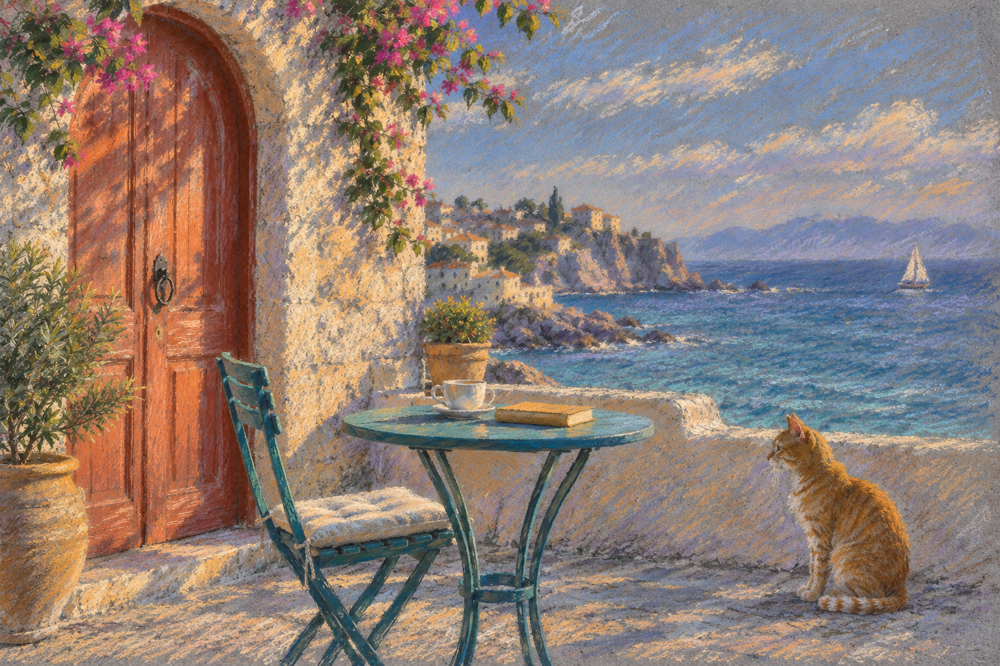
本页所有画面均为 AI 生成演示，未使用真实用户照片。12 款使用同一张输入图，方便比较材质与构图变化。生成模型可能改变局部细节，请对照原图检查；本组场景示例不代表人物身份保持效果。
查看全部风格配方 ↗下一幅，换成你的故事。
- 安装技能，带上照片
把完整文件夹放入助手的技能目录，再上传想转绘的照片。
- 选一种材质，说清想保留的细节
人物表情、宠物花纹、旅途中的地标，都可以单独强调。
- 看一眼对照，再把画收藏起来
默认保留原图构图。想做海报或留标题区，可以明确提出。
复制这句话，和照片一起发给助手
需要支持原图输入的图片工具。本页仅展示示例与使用方法，不接收上传，也不在线生成图片。